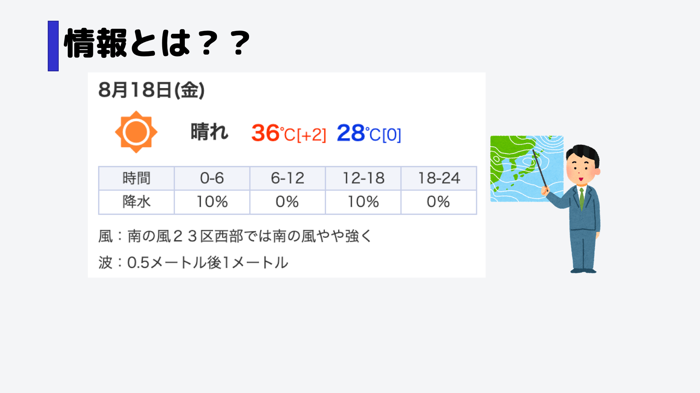
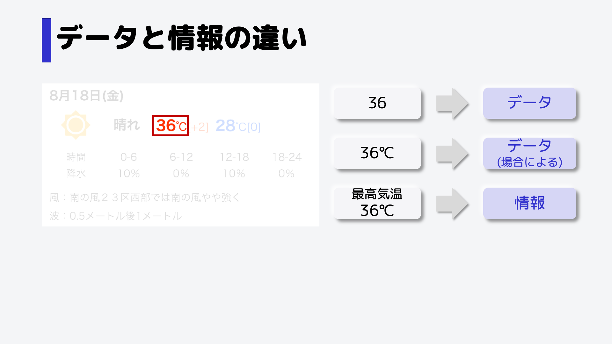

情報とは
情報とは、よく耳にするかと思いますが、どういった意味になるのでしょうか。
例えば、このような天気予報を見た時、あなたはどう感じますか？
例えば、「とても暑いな」とか、「雨は降らないな」とかを考えたと思います。
もっと発想力が豊かな人は、「熱中症対策をしなければいけないな」とか、「傘はいらないな」とかまで考える人もいるでしょう。
このように情報とは、ある物事に対しての知らせのことを指し、何らかの意思決定の判断材料になるものです。
例えば今回は天気という情報を見て、傘や水などの持ち物に関する意思決定につながったと考えることができます。
データと情報の違い
似たような言葉で、「データ」というものがあります。これと情報の違いは何でしょうか。
ヒントは、「36」や「36℃」は基本的にはデータになります。
データというのは、事実などを数字や記号で表したものになります。
例えば「36」単体で考えた時、それだけを聞いても何のことかわかりません。「36℃」というのも同じです。
朝測った体温なのか？お風呂の温度なのか？そういったそのデータがどういう意味を持っているかがわかった瞬間、それは情報になるのです。